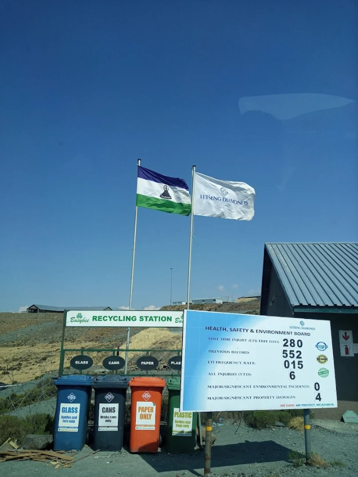
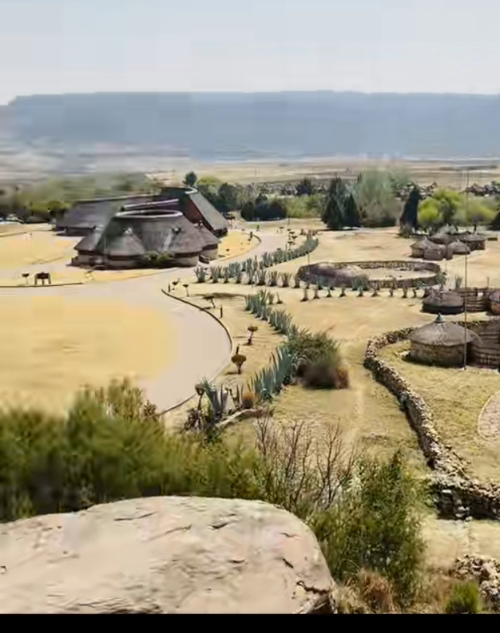
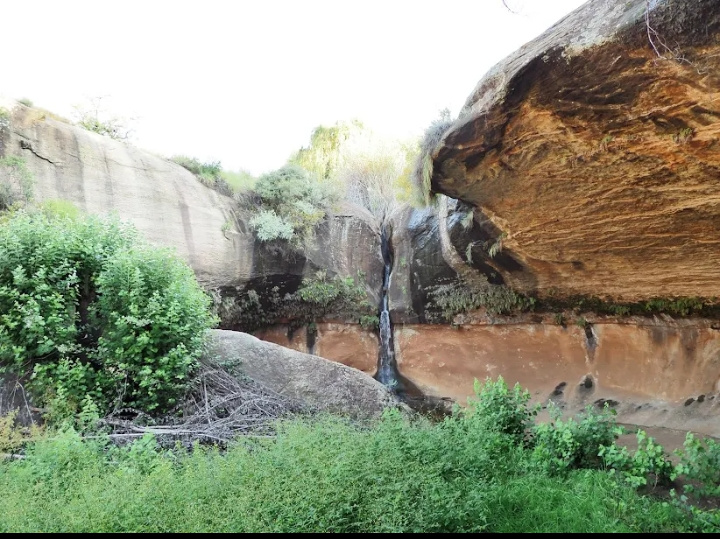

Destinations
Katse Dam

Katse Dam is situated at 2,000m above seal level, Katse Dam is described as "a striking piece of modern engineering".The Dam is one of less than 30 double curiature. It is a concrete arch dam on the Malibamatso river.Is one of Southern Africas largest dam.It was completed in 1997 and is 710m long 185m high.The deep lake formed by the dam can hold 2 billion cubic meters of water.It is found in Thaba-Tseka district.

Letseng La Terae Mine

Is a site where mineral ores are extracted from the ground by excavating surface pits and subterranean passage,found in Mokhotlong District.The mining lease was granted in 1999 by the government.It is at an elevation of 3,100m.It is the worlds highest diamond mine.Is found in landlocked Southern African Kingdom of Lesotho.
Maliba Lodge

Is a special place nestled between nature in pristine Tsehlanyane National Park of the Mountain Kingdom.It offers glimpse of wildlife and adventure.Indulge in a world class dining experience at our mountain-top restaurant,located in the breathtaking highlands of Lesotho. Enjoy delicious, chef-crafted meals.It is the first and only5 star ecolodge in Lesotho.

Thaba-Bosiu Cultural Village

Thaba-Bosiu plateau has an enormous historical and symbolic value for the Basotho Nation as it signifies the origin of Basotho Nation. King Moshoeshoe I and his people arrived at Thaba-Bosiu from Botha-Bothe in 1824. It was on Thaba-Bosiu where Moshoeshoe I demontrated military and diplomatic ability to protect his people against the attack and invasion by stronger nations.It is on this plateau where Moshoeshoe through his leadership skills,attracted many refuges from other nations as well as making treaties with other contemporary chiefs.In 1967,a year after independence,Thaba-Bosiu was declared a national monument.Thaba-Bosiu cultural village is a serene destination.Thaba-Bosiu mountain,it offers a glimpse into the traditional Basotho way of life,with authentic performance,guided tours,and Basotho cuisine,making it an ideal spot to experience Lesothos rich heritage.

Liphofung

Liphofung Is a historical and cultural site in Botha-Bothe District,Lesotho.It features a sandstone overhang known as Liphofung Cave,which contains San Rock Art and was once a temporary home for King Moshoeshoe the Great.The site offer guided tours of the cave,a cultural center with exhibits on Basotho culture and San Rock Art,a shop selling local crafts,and various accommodation options including chalets,rondavels,and camping.Its located in a tributary stream valley of the Hololo river,accessible by a concrete road.